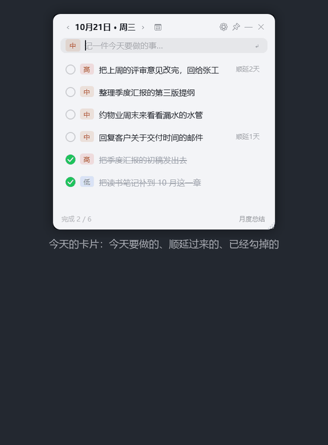
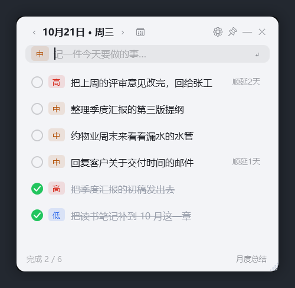
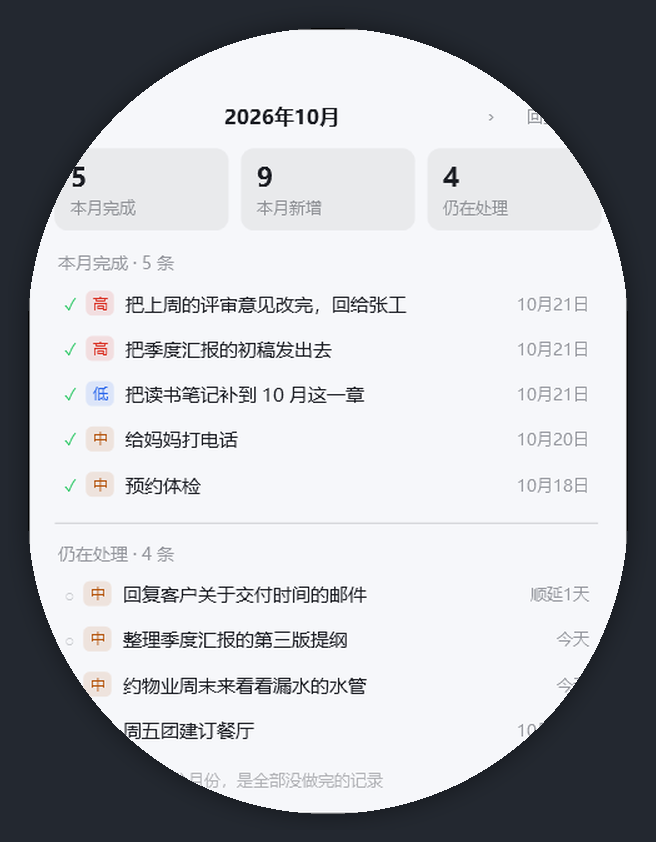

Memo
常驻桌面的今日待办小卡片。只记今天要做的事，昨天没做完的自动顺延，随手瞄一眼就知道还剩几件。
单文件 2.4 MB · 数据留在本地 SQLite · 不联网、不注册

卡片 → 勾掉一条自动划线沉底 → 月度总结按月回看它是一个很窄的功能集
不做项目管理、不做多人协作，只解决「今天该干什么」。
桌面常驻、始终置顶
无边框圆角卡片，拖到屏幕任意角落，位置和尺寸下次启动自动恢复；点 📌 可切换置顶。
昨天没做完，今天自动顺延
未完成的条目第二天继续出现，并标注「顺延 N 天」；新一天不会丢事，也不会把旧账藏起来。
提前安排将来
往后翻或点日历挑某一天，就切到「安排 10月21日」。提前写下的事记在那一天，不会提前冒到今天。
月度总结
本月完成了多少、新增了多少、手上还剩多少；按完成日期记账，9 月安排 10 月才勾掉的算 10 月成绩。
按日期回看
左右箭头按自然日翻页，或开日历挑日子（有记录的日子带圆点）。看过去时整卡只读，一键回到今天。
三套主题
深色 / 浅色 / 浅黄，设置里三选一。透明度和置顶也在同一个设置窗里。
全局热键与托盘
Ctrl + Alt + M 在任何程序里都能把卡片叫出来；平时收在托盘，任务栏不占位。
删除可撤销
删除只打标记不真删，底部的「撤销」能把最近删掉的条目捞回来。
长这样
左：今日卡片；右：月度总结窗（可拖动、可翻月）。


开始用
下载即用，不需要安装。
方式一：直接跑
- 到 Releases 下载
Memo.exe - 放到一个固定的目录（比如
D:\Tools\Memo\），双击运行，给它创建个桌面快捷方式 - 第一次启动会自动建库，直接就能加第一条待办
- 想开机自启：设置里勾选「开机启动」
方式二：从源码构建
git clone https://github.com/xiayijieXYJ/memo-desktop.git
cd memo-desktop
dotnet build -c Release
dotnet run -c Release
# 打包成单文件（需要 .NET 8 SDK）
publish.cmd # 框架依赖版，2.4 MB
publish-standalone.cmd # 自包含版，含运行时，体积大自检与演示数据
Memo.exe --selftest # 95 项端到端断言，全绿才算改对了
Memo.exe --seed # 写入一批演示数据，看界面用数据在哪
全在本机，没有账号，没有云同步。
%APPDATA%\Memo\memo.db
一个 SQLite 文件，所有待办都在里面。拷走这个文件就等于带走了全部数据。
%APPDATA%\Memo\backups\
每次启动自动备份一份数据库，出问题可以拿旧文件盖回去。
不联网
程序没有任何网络请求，不需要登录，也不会上传你的待办内容。
常见问题
几个被问得最多的点。
为什么只能记「今天」，不能建一个长期项目列表？
刻意的取舍。列表一长就会开始拖延和堆灰，「今天」这个小窗口才逼得人做减法。确实要往后放的事，用「提前安排」记到具体某天就行。
已完成的事去哪了？
勾掉后划线沉到列表底部；右键「清除已完成」可以一次性清空。想回看某天干了什么，用「月度总结」，或在日历里点那一天。
能同步到手机或其他电脑吗？
不能，这是本地单机程序。多台电脑各自独立；需要迁移就把 memo.db 拷过去。
为什么图标是深黄色的？
那是应用的主色，取自浅黄主题的强调色，跟界面里的高亮按钮是同一个颜色。